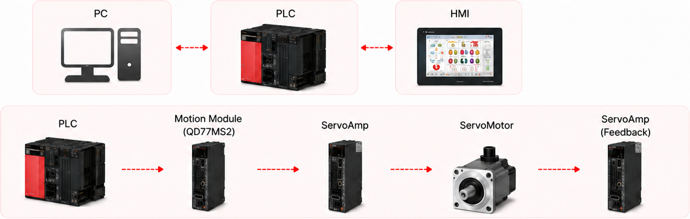
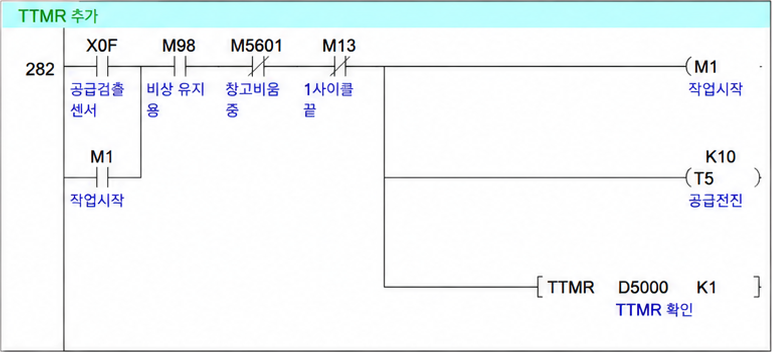
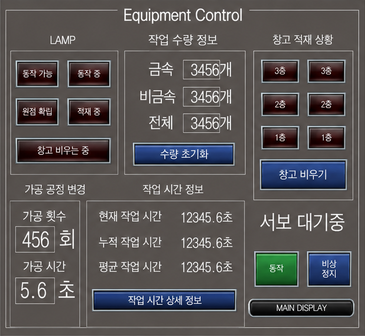

창고 비움 · 시간 측정 · HMI
적재물 배출 기능, 작업 시작과 시간 측정 연결, Main·Equipment Control·시간 상세 화면 구성에 기여했습니다.
영상 편집·자료 정리도 수행했으며 제어 로직 구현과 별도 기여입니다.
소재 분류·적재 자동화 공정에서
창고 비움, 작업 시간 측정과 HMI 화면 구성을 담당했습니다.
실제 개발 기간은 확인 필요입니다. 발표자료 기반 구현 설명과 최종 PLC·HMI 원본 확인은 구분합니다.
서보 모터를 이용한 PLC 자동화 공장 프로젝트. 소재 투입·가공·이송, 재질 판별과 창고 적재·배출을 시퀀스로 연결하고 HMI에서 운전 상태를 확인하는 팀 시스템입니다.

문서 기반 요약 · 창고 비움은 HMI 요청에 따른 별도 운전 기능입니다.
담당 역할창고에 적재된 소재를 배출하는 기능, 작업 시간 측정, 설비 운전 화면 구성·표시
담당 범위는 발표자료와 역할분담 기록에 근거합니다. 최종 프로그램·화면 전체의 단독 작성과는 구분합니다.
적재물 배출 기능, 작업 시작과 시간 측정 연결, Main·Equipment Control·시간 상세 화면 구성에 기여했습니다.
영상 편집·자료 정리도 수행했으며 제어 로직 구현과 별도 기여입니다.
기본 자동 공정, Teaching, 설비 점검과 비상정지를 담당했습니다. 이 기능들을 개인 구현으로 포함하지 않습니다.
통합 이후의 배선·장비 설정·실물 시험은 개인별 수행 범위가 분리되어 있지 않습니다.
HMI 요청 ↓ · 상태 표시 ↑ / 센서 입력 ↓
제어 ↓
PLC 도구: GX Works2 / HMI 도구: GT Designer3. 팀 장비 목록은 개인이 모든 장치를 직접 배선·설정했다는 근거가 아닙니다.
발표자료의 만재 분기: 금속은 컨베이어 끝 박스로, 비금속은 이송 중 배출합니다. 세부 상태 전이는 추가하지 않았습니다.
자동 적재 다음에 항상 이어지는 단계가 아닙니다. 실행 허용의 세부 접점·PLC 내부 상태 전이는 최종 원본에서 확인하지 못했습니다.
Equipment Control에는 창고 비우기 버튼, 비우는 중 표시, 1~3층 적재 상태가 제시되어 있습니다. 담당 기능은 적재된 소재를 꺼내 끝 박스로 옮기는 동작입니다.
버튼의 PLC 디바이스 주소, 창고 위치별 순서, 완료 판정과 직접 작성·수정한 접점·출력 범위는 최종 원본 대조가 필요합니다.
발표자료 10쪽의 래더 캡처에서 작업 시작 M1, T5, TTMR D5000 K1을 확인했습니다. 입력 조건과 M1 유지 분기를 바탕으로 작업 시작과 시간 측정 명령이 연결된 화면입니다.

M1 · 유지 분기 확인T5 · X0F · M98 · M5601 · M13TTMR D5000 K1각 접점의 전체 사용처·초기화·종료 조건, 평균·누적 시간 계산식, 측정 리셋 시점과 HMI 표시 주소는 확인되지 않았습니다. 이 발췌로 전체 네트워크의 단독 작성이나 측정 정확도를 주장하지 않습니다.
Main, Equipment Control, 작업 시간 상세 화면의 구성·표시 기능에 기여했습니다. 화면별 신규 작성과 기존 화면 수정 범위는 확인 필요입니다.
창고 비움 요청 · 수량 초기화
가공 횟수·시간 설정
원점·적재·창고 비움 상태
작업 수량 · 현재·누적·평균 시간
위 항목은 팀 HMI 화면의 기능 설명입니다. 모든 버튼·표시를 개인 단독 구현으로 보지 않으며 화면의 예시 숫자는 실측 성능이 아닙니다.

팀 통합 자료에는 적재물을 비우는 과정에서 스토퍼 간섭이 발생한 사례가 기록되어 있습니다.
흡착 전에 스토퍼 실린더를 함께 동작시키는 조치가 제시됩니다. 최종 원본 반영 위치와 직접 수정·조정·시험한 개인 범위는 확인되지 않았습니다.
창고 비움 담당 기록만으로 해당 조치를 개인이 해결했다고 판단하지 않습니다. 재발 방지 제안도 구현 완료 기능으로 포함하지 않습니다.
공개 코드 저장소 주소는 확인되지 않았습니다. 코드 링크·저장소 QR을 임의로 제공하지 않으며, 원본 파일·미승인 사진·영상도 이 페이지에서 공개하지 않습니다.
← 전체 포트폴리오로 돌아가기